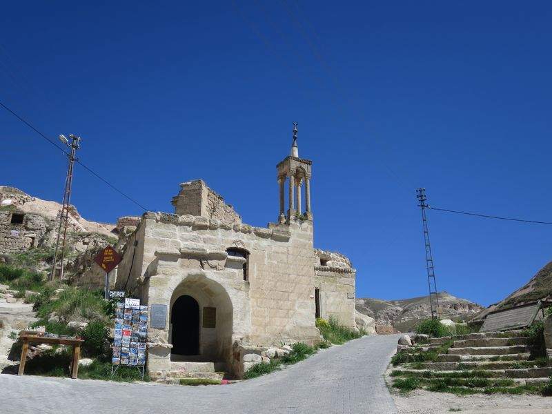

今日主要行東北面嘅山谷，Güllüdere Valley (Rose Valley)，經 Çavuşin 村莊，到 PASABAG (Monks Valley)，再去 Zelve，然後搭車返嚟。
根據噚日嘅經驗，都預咗會蕩失路，行錯路，甚至搵唔到路。
果然係搵唔到入口，雖然所謂嘅入口只係一個指示牌，但點解我連呢啲嘢都睇唔到嘅呢......結果又係見路就行，穿過一個墳場，hostel 提供嘅簡單地圖上的確係有個墳場呀。
不過之後都冇乜意思，隨意咁行，風景好好睇，開始見到一啲噚日睇唔到嘅地勢，例如一啲好似菇咁嘅石。見到有人踩單車，至醒起可以租單車，不過上上落落都唔係好玩。入咗幾個有洞嘅大石，有一個有條長梯可以上去中間度門，點知一推開門裏面有水壼有床，好似誤闖民居咁。都唔知自己去咗邊，行行下終於見到有舊石寫住 Red Valley，但有啲又寫住 Rose Valley。
行到一間賣鮮果汁嘅舖頭，成 10 TL 一杯細果汁，老闆話今日冇人幫襯過呀，好可憐，就買咗一杯，順便問下路，至肯定咗其實仲未去到 Rose Valley…
但係跟住老闆指嘅方向行，嗰個谷應該就係 Rose Valley，但係都係搵唔到嗰啲石教堂呢，應該話係睇咗幾座有洞嘅大石但唔肯定，因為嗰啲斜路好滑，所以有啲路都唔敢行，行到一個好似盡頭嘅地方就返去果汁店，行另一條路去 Çavuşin，老闆仲問我谷裏面有冇其他人，我話冇咯，然後佢似想收檔走人咁款。
行去 Çavuşin 嘅路中見到一啲荒廢咗嘅檔賣咖啡，心諗呢度以前都幾旺架喎。响一啲分支路，至見到一啲正式嘅路牌，仲見到原來有分 Güllüdere (Rose) I 和 II 嘅路，其實我想睇嘅石教堂係咪响第二條路……不過算啦，都晏。去到 Çavuşin 搵間餐廳飲下嘢坐下。
原來 Çavuşin 都有座大石山，好多洞屋，係以前嘅住屋，可以行上去。我行上去睇風景，又去望下通去 PASABAG 嘅路，哇哈哈，我又再要犯响 Uçhisar 同樣嘅錯喇，就係自己搵路同埋偏要行另外嘅路，明明地圖路線是由 Çavuşin 墳場後面開始嘅，我就由呢度直接向下行。
最慘係其實我都有問過幾個當地人，佢哋都係叫我行去呢邊架，又話墳場嗰邊係返去 Göreme。然後當然又行錯路啦。不過這條路經過嘅地勢都好壯麗。行去到 Çavuşin 嘅農田區，見到一個老婆婆同一個細路女，我問完路問佢可唔可以影佢哋相，個阿婆唔肯，但就叫我影個細路女喎，點解細路就影得嘅？
好啦，問過啲農夫去 PASABAG 佢哋都係指咗我去嗰啲谷地，應該點都行到過去掛，但行咗幾條路，來來回回，都係唔通，係有一條路似樣啲嘅，但係，先要上谷嘅較高位置，條路好斜，雖然是上斜，但我對鞋仍然係唔得，上兩步就跣落嚟，冇乜計。
然後返去條村度，遇到一個後生仔，踩住電單車，15 TL 載我去 PASABAG，原來好鬼近，不過首先你要識路，而且走嘅唔係山路。
一望 PASABAG 我估呢度係個旅遊勝地，因為見到有一兩架旅遊巴停咗，而附近仲有個大得好緊要嘅停車場，這裏平時一定泊滿晒車。PASABAG 係有啲一支支菇形石嘅地方，睇完呢度又試想行山去 Zelve，上到去 PASABAG 後面嘅山，一睇，望返去 Çavuşin，就覺得好奇怪，究竟如果要由 Çavuşin 行山路過嚟，是啲乜嘢路？
諗嚟諗去，最大可能，就真係山路，是谷頂啲路，但我一睇，嗰啲小路、斜路，我都應該係行唔到架喇。然後再望埋去 Zelve 嘅路，又係一樣，要兜一兜上去嘅，唔係就係行返落谷底邊。
都四點喇，Zelve 嘅 open-air museum 好似收六點，就行番下面穩陣啲。
如果唔行山路 Zelve 又係好快就行到去，去到買票嘅地方，坐响旁邊嘅人同我打招呼，我向佢問好，他答唔好……話冇顧客。Zelve 嘅 museum 又係嗰種 barcode scan 飛入閘，應該可以用 museum pass，所以如果我買嘅係全國嗰款 pass 就正。
而呢個 museum，非常讚呀，三個山谷，舖好咗一條單程路，指引清晰，差唔多每個地方都有簡介。第三個谷嘅一條幾十米隧道封咗，不過仍然可以繞過去另一便，另一便嘅盡頭係山路通去另外嘅地方。
睇完走人，响外面嘅檔食 pancake 同埋飲 Ayran，pancake 係即時用一個圓圓金屬板煮嘅，而 Ayran 係當地乳酪飲品，通常周街都可買嘅係工廠製好一杯杯膠杯嘅，如果喺一啲餐廳嘅 Ayran 係用一啲金屬杯裝住畀你飲嘅話，就多數係自家製乳酪飲。
坐 dolmus 返 Göreme，3 TL。行去 octogar 買後晚去 URFA 嘅車飛，好順利，冇話叫我唔好去。上山睇完日落之後返 hostel，hostel 正門前面係一條無人小巷，有一間好細嘅餐廳，只有幾樣嘢食，寫住 mum's meal，入去冇人，但真係有個阿媽狀嘅女人喺廚房，我叫了湯同雞飯，仲叫咗佢自己製嘅紅酒，我根本飲酒所以只要半杯，但今次我竟然飲得落。
呢度啲嘢食好好味。走嘅時候佢講 güle güle，原來係 good bye 嘅意思。

 Çavuşin Old Village
Çavuşin Old Village
 呢幾但嘅行山地圖……
呢幾但嘅行山地圖……




 Pasabag (Monks Valley)
Pasabag (Monks Valley)


Zelve Open Air Museum